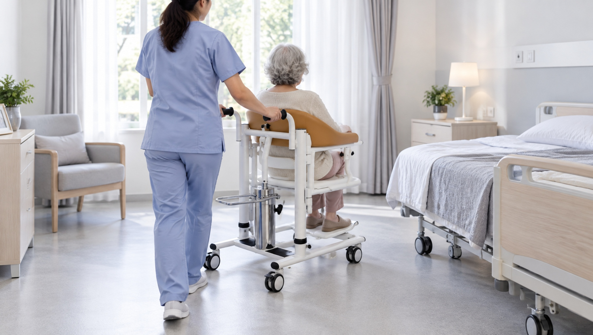
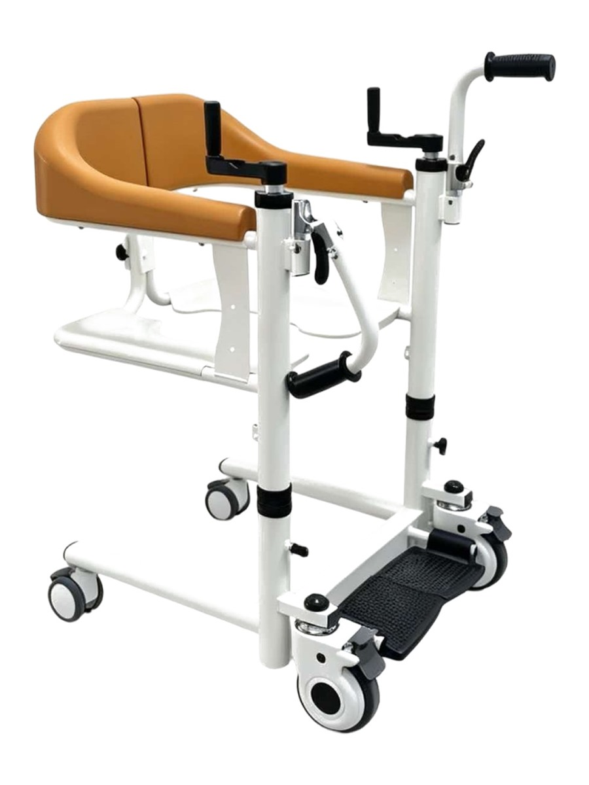
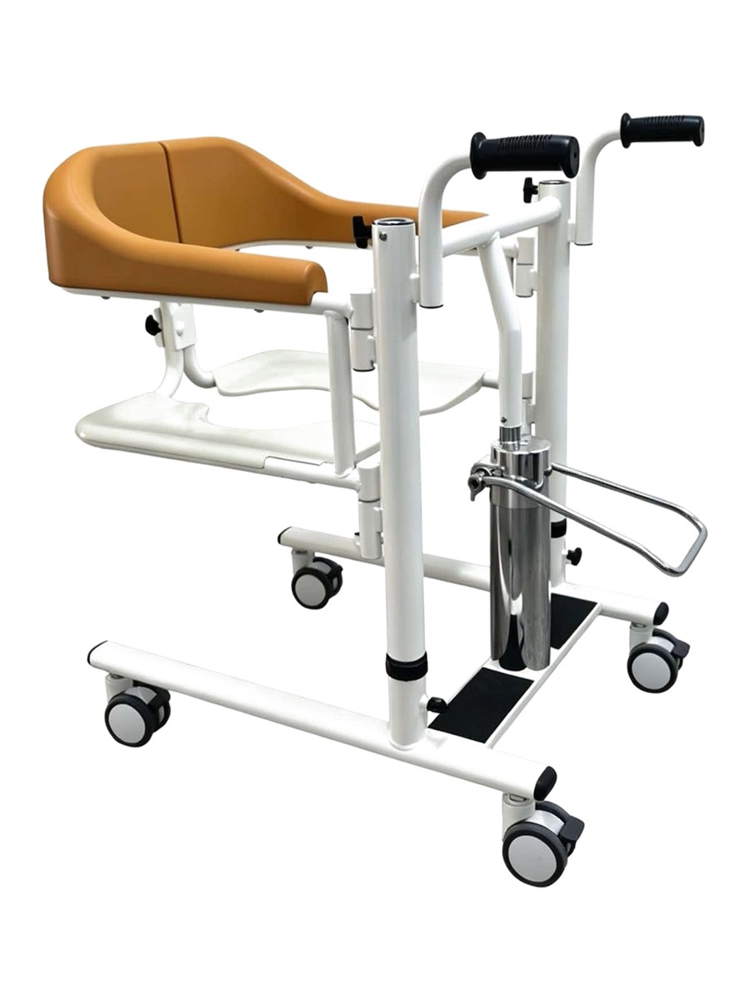
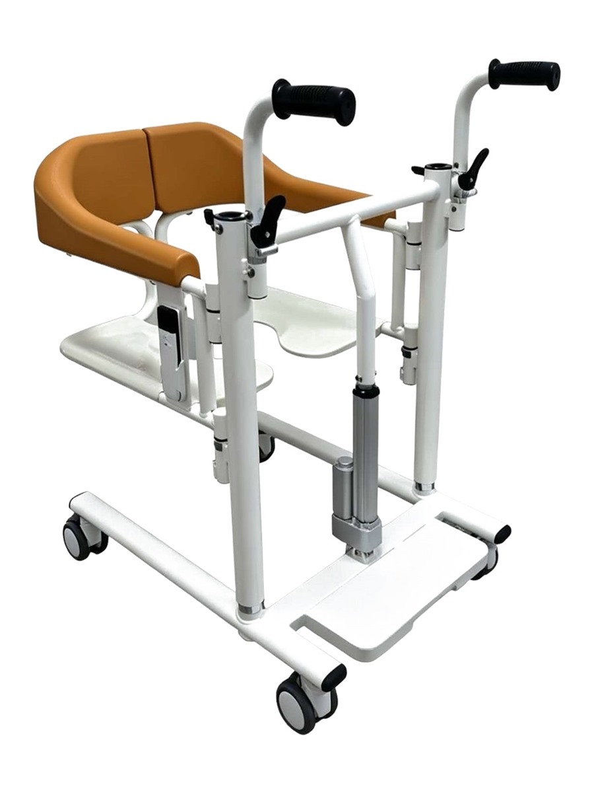
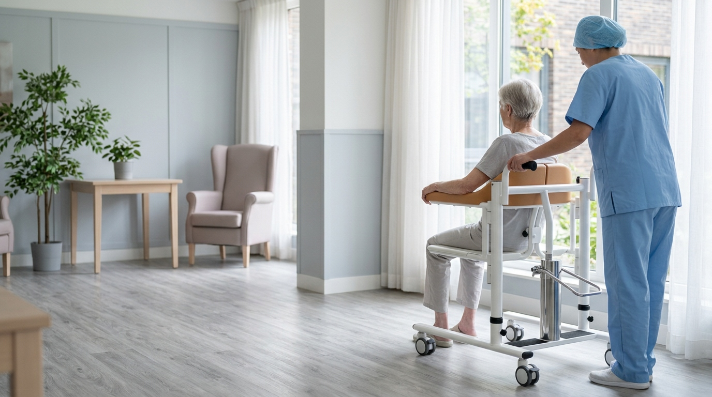
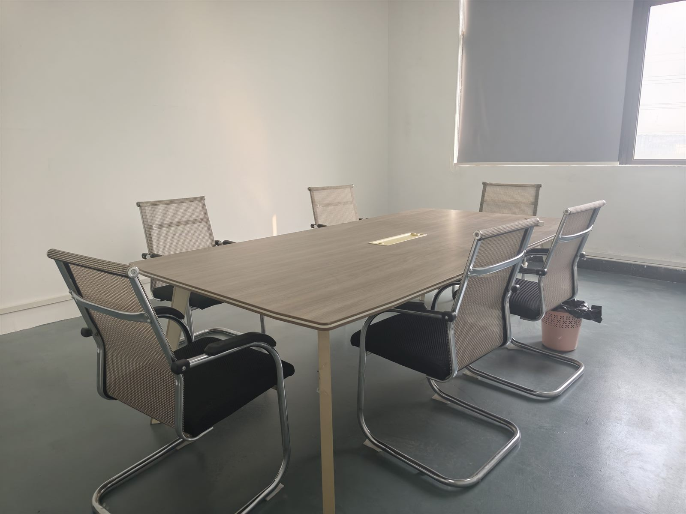

Patient Lift Transfer Chair — The Complete Buying & Specification Guide
A patient lift transfer chair is the device that nursing homes, home caregivers, and clinics increasingly search for as a single term — not "lift" separately from "transfer chair." This guide covers what it is, why the combined search term matters, and every buying decision that follows from drive type to weight capacity to factory-direct sourcing.
What's in this guide
- Exactly what a patient lift transfer chair is — lift + transfer chair in one device
- Three drive types compared: manual, hydraulic, electric — and which fits which setting
- How to choose the right model for nursing homes, home care, or small clinics
- Weight capacity explained: why 150 kg / 330 lbs is the standard rating
- Installation, assembly, and post-install safety checklist
- Accessories, narrow-doorway models, and factory-direct sourcing
- Summary checklist for procurement teams and caregivers
Search Amazon, Google Shopping, or Alibaba in 2026 and you will see the keyword shift: buyers who used to search for "patient lift" and then narrow to "transfer chair" are now searching for the combination — patient lift transfer chair — directly. The reason is simple: nobody wants two devices when one device does both. Caregivers need something that lifts the resident off the bed or commode seat, transports them a few metres, and lowers them into the next chair. A patient lift transfer chair is that device.
This guide is written for three audiences. Procurement teams at nursing homes and hospitals will use it to spec and source. Home caregivers will use it to understand what to look for when a loved one needs transfer equipment. DME distributors and startup operators will use it to understand the full product category before placing bulk orders. Every section links to deeper guides on each sub-topic.
What Exactly Is a Patient Lift Transfer Chair?
A patient lift transfer chair is a piece of durable medical equipment (DME) that combines two functions into one frame:
- Lift. It raises and lowers a person with limited mobility vertically — usually between 20 and 40 cm of travel — using a mechanical, hydraulic, or electric drive mechanism.
- Transfer chair. It has a padded seat, armrests, four caster wheels, and (on most models) an integrated commode opening so the resident can use the toilet without a second transfer.
The combined design solves the biggest limitation of the two separate categories:
- A standalone patient lift — even one with a sling — requires the caregiver to attach and detach the sling between each transfer, which adds 30 to 90 seconds of handling time per cycle. In a 100-bed nursing home doing 4,000 transfers per year, that is 167 hours of extra caregiver time.
- A standalone transfer chair can roll a resident between surfaces but cannot lift them — so getting them from a bed onto the chair still requires a manual lift or a separate lifting aid.
- A patient lift transfer chair does both. The resident sits on the padded seat, the caregiver presses a button or pumps a foot pedal to lift them clear of the bed or chair, rolls the device to the target surface, and lowers them. No sling to position, no second device to fetch.

Quick side note:
The terminology still varies by region. In the UK and Australia, this device is often called a patient hoist with a seat attachment. In the US, transfer chair and patient lift were until recently two separate search queries that buyers would cross-reference. The combined term patient lift transfer chair is a newer keyword that reflects how buyers actually shop today.
Three Drive Types Compared
The single biggest decision in a patient lift transfer chair is what powers the vertical lift. There are three drive types and each serves a different care scenario. All three can share the same frame and 150 kg (330 lb) weight rating — the drive module swaps out on a common platform.
Manual (hand-crank screw jack)
A hand crank turns a screw jack that raises and lowers the seat. No fluid, no pump, no battery, no electronics. The lift mechanism is fully sealed so there is almost nothing to fail. Trade-off: raising a resident requires 6 to 8 seconds of continuous cranking per 20 cm of lift. Best for budget-first facilities or backup devices where downtime tolerance is zero.
Hydraulic (foot-pedal pump)
A foot pedal drives a hydraulic pump. The caregiver pumps with one foot while steadying the resident with both hands. Faster than manual and still needs no power source. Hydraulic models are the workhorse of nursing homes because they are dependable, affordable, and the effort can rotate between caregivers across a shift. The hydraulic fluid and seals are the only components that need periodic attention.
Electric (battery-powered actuator)
A 14.8V rechargeable battery powers a linear actuator. The caregiver presses a button on a wireless remote — no pumping, no cranking. This is the least physically demanding option and the only one suitable for a single caregiver in a home care setting. The trade-off is a higher purchase price and the need to keep batteries charged (roughly 4 hours from empty on a 100–240V charger).
Which should you choose?
Nursing home (multi-caregiver, daily use) → hydraulic. Home care (single caregiver) → electric. Clinic or backup → manual. For the full head-to-head, read our manual vs hydraulic vs electric patient lift guide.



How to Choose the Right Model for Your Setting
Beyond drive type, the care setting dictates which patient lift transfer chair model is the right fit. The same 150 kg rated device works everywhere — but accessories, base width, and seat height range change the recommendation.
Nursing home
Nursing homes do the highest volume of transfers — often 30 to 60 transfers per day per device. Hydraulic is the standard drive type because it is reliable and the physical effort distributes across staff. Prioritise four locking casters (both rotation and swivel), a 50 cm minimum seat depth for extended sitting comfort, and the commode opening as a non-negotiable feature. Frame must be high-carbon steel with powder-coat finish — mild steel corrodes in 18 months in shower-use environments. Read our full nursing home vs home care lift guide for a detailed comparison.
Home care
Home care has one caregiver, narrow doorways, and limited space. Electric drive is the only realistic choice — a single caregiver cannot safely operate a hydraulic model alone while steadying the resident. Prioritise compact base width (30 inches or less — see our narrow doorway compact guide), rechargeable battery with a wall charger, and a removable seat pad that fits through bathroom doors. Home care buyers also want to know about replacement battery availability and how long the lift cycle lasts on a full charge.
Small clinic or outpatient facility
Clinics have lower transfer volume — maybe 5 to 10 transfers per day — but need the device ready at all times. Manual drive is the lowest-cost option for clinics that want a backup to their primary electric or hydraulic device. Prioritise easy storage (foldable backrest if available), a commode opening for toilet access during appointments, and the FDA-listed / FDA registered designation for the US market.

Weight Capacity Explained
Open any spec sheet for a patient lift transfer chair and you will see one number prominent: 150 kg or 330 lbs. Why this exact number, and why is it almost universal across the industry?
The 150 kg rating is the safe working load (SWL) verified through static load testing aligned with ISO 10535, the international standard for hoists used in health and social care. During testing, the frame, lift mechanism, and caster assembly are loaded to a minimum of 1.25 times the rated capacity for at least 15 minutes without permanent deformation or failure. This test is what separates a spec sheet claim from a certified rating.
The 150 kg figure is not an arbitrary round number. It covers the vast majority of adult residents needing mobility assistance — roughly the 98th percentile of adult body weight in North America and Europe. Bariatric models exist at 200 kg and above but are a much smaller market segment, and the frame dimensions change significantly. Read our dedicated weight capacity explained guide for the full testing methodology and load documentation requirements.
Installation & Assembly
Most patient lift transfer chairs ship in two to three boxes and require assembly before first use. The good news is that all models on the market follow essentially the same sequence, and it is designed to be a two-person job that takes 45 to 90 minutes depending on model. The bad news is that skipping a step — most commonly not torquing the frame bolts or not testing the lift mechanism before loading a resident — is how avoidable accidents happen.
The basic sequence is: attach the base wheels, stand the main frame upright, mount the seat assembly, attach the drive module (hydraulic pump, hand crank, or electric actuator), and connect any safety straps or sling attachments. Then comes the critical post-install safety check — ten items that every facility should document. Read our full step-by-step installation guide for the detailed sequence, tools required, and the ten-item post-install checklist.
For multi-unit procurement, our factory provides pre-assembled units for an added fee — and all assembly work is documented with torque specifications and load test certification for each device.
Accessories & Add-ons
The patient lift transfer chair category has one of the broadest accessory ecosystems in DME. The right accessory can add capability that you thought required a second device — for a fraction of the price. The most requested accessories are:
- Sling (full-body, toileting, or universal). For residents who cannot sit upright even with arm support, a sling accessory converts the seated transfer chair into a full hoist. The toileting sling in particular lets staff support the resident while removing clothing for toileting.
- Commode pan. A removable plastic bowl that slides into the commode opening. High-volume item for nursing homes — most facilities keep at least two per device.
- Meal tray. A removable tray with raised edges that prevent spills. Standard for stroke patients or anyone needing upper-body support during meals.
- Armrest and backrest pads. Memory foam covers that reduce pressure points. Pressure ulcer prevention is the primary reason facilities upgrade these.
- Battery pack and footrest extensions. Common electric model accessories — an extra battery lets you operate all day without recharging, and footrest extensions accommodate taller residents.
We cover every accessory in detail — what it does, when you need it, and what to source from the factory vs a third-party DME — in our accessories guide.
Narrow Doorways & Tight Spaces
The single most common complaint we hear from home care buyers: "The lift will not fit through my bathroom doorway." This is not a home care problem — it is a standard doorway problem. US building code sets the minimum interior doorway width at 32 inches (81 cm). Most standard patient lift transfer chairs have a base width of 34 to 36 inches (86–91 cm). They will not fit.
Compact models exist with a base width at or below 30 inches (76 cm). The trade-off used to be lower weight capacity — but our factory's compact platform maintains the full 150 kg / 330 lbs rating through a re-engineered frame that lowers the centre of gravity while narrowing the footprint. Compact models are the #1 recommendation for home care, older nursing homes with pre-ADA doorways, and any setting where doorways are narrower than 36 inches. Read the full details, measurement checklist, and trade-off analysis in our compact narrow doorway guide.
Factory-Direct vs Distributor Sourcing
The patient lift transfer chair market has two paths: distributor (local or regional DME supplier) and factory-direct (China factory, like EMPCaring). Here is what you trade and what you save:
Distributor
Local distributor is the right choice if you need one or two units right now and you want someone to handle assembly and warranty locally. You pay a 30 to 50 percent markup over factory price and you are limited to whatever models the distributor happens to stock. The distributor also controls your spare parts supply — when you need a replacement hydraulic seal or battery, you call them and wait for their next shipment.
Factory-direct
Sourcing directly from the factory removes the distributor markup. You get the same frame, same drive module, same 150 kg rating — for 30 to 50 percent less on unit price. For B2B buyers, factory-direct also means customisation: we do white-label branding, custom base widths, custom upholstery colours, and OEM accessories. Lead time is 35 days for standard models and a 1-container minimum order quantity for bulk B2B. Read our guide on how to start a DME business for more on the sourcing decision as you scale.

Summary Checklist
Use this seven-item checklist the next time you spec or buy a patient lift transfer chair. Print it. Share it with procurement.
- Weight capacity confirmed. 150 kg (330 lbs) with load test documentation aligned with ISO 10535 — not just a spec sheet claim.
- Drive type matched to setting. Hydraulic for multi-caregiver facilities, electric for home care or single-caregiver settings, manual for clinics and backup.
- Base width measured against doorways. Standard 34–36 inch base won't fit 32 inch doorways — get the compact model if that's your situation.
- Frame material verified. High-carbon steel with powder-coat finish. No mild steel — it corrodes in wet environments within 18 months.
- Four locking casters. All four casters must lock both rotation and swivel. Two locking casters leave a pivot point that is a stability risk.
- Commode opening included. Non-negotiable for nursing homes and home care. If it is listed as an "accessory," walk away.
- Accessories sourced at the same time. Batteries, slings, commode pans, meal trays — order with the device to save on shipping and ensure compatibility.
FAQ
What is a patient lift transfer chair?
A patient lift transfer chair combines two functions in one device: it is a patient lift that raises and lowers a person safely, and it is a transfer chair with wheels and a padded seat so that the same device can transport them between surfaces. Unlike a standalone lift that requires a separate sling or chair, or a standalone transfer chair that may not lift vertically, a patient lift transfer chair does both with a single operator and a single piece of equipment.
How much weight can a patient lift transfer chair hold?
Most standard patient lift transfer chairs are rated to 150 kg (330 lb). This is the safe working load verified through static load testing aligned with ISO 10535. The 150 kg figure is not a marketing round number — it is the load at which the frame, lift mechanism, and caster system have been tested to hold without permanent deformation.
What are the three drive types for a patient lift transfer chair?
There are three drive types: manual (hand-crank screw jack, lowest cost, no power needed), hydraulic (foot-pedal pump, faster than manual, still no power, caregiver provides foot effort), and electric (14.8V battery-powered actuator, remote control, least caregiver effort, best for single-person home care). All three can share the same frame and 150 kg rating — the drive module swaps.
Can a patient lift transfer chair go through a standard doorway?
Standard doorway width in the US is 32 inches (81 cm). Most standard patient lift transfer chairs have a base width of 34–36 inches (86–91 cm) and will not fit through a 32-inch doorway. Compact models with a base width at or below 30 inches (76 cm) are available and will fit standard doorways while still maintaining a 150 kg rating if sourced directly from the factory.
Does Medicare cover a patient lift transfer chair?
Medicare Part B may cover a patient lift transfer chair as durable medical equipment (DME) if it is medically necessary and prescribed by a doctor. Coverage depends on the specific item, the supplier, and the patient's medical condition. The patient typically pays 20% of the Medicare-approved amount after meeting the Part B deductible. Read our full Medicare coverage guide for details.
Ready to specify or order?
We build manual, hydraulic, and electric patient lift transfer chairs on a common high-carbon steel frame — 150 kg capacity, ISO 10535 load tested, FDA-listed for the US market. Factory-direct pricing, white-label available, 35-day lead time. Send us your setting and requirements and we will recommend the exact model.
View Our LiftThis article is a general buying guide for patient lift transfer chairs and is not medical or legal advice. Always confirm current specifications, regulatory status, and warranty terms directly with the supplier before purchasing.